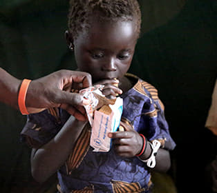
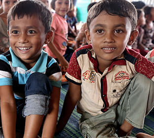

- 아이의 당연한 하루를 지키는 인사 give a nice day
- 어른의 전쟁으로 빼앗긴 아이의 일상
아이가 누려야 할 당연한 하루를 지켜주세요
- 이 팔찌는 전쟁피해 아이들을
끝까지 지켜주겠다는 실천의 약속입니다 - 김혜자 월드비전 친선대사
- 이 팔찌는
전쟁피해 아이들을
끝까지 지켜주겠다는
실천의 약속입니다 - 김혜자 월드비전 친선대사
- 전쟁고아로
살아가는 아이들 -
어른들의 욕심으로
전쟁고아가 된 38만 명의 아이들모든 생명을 앗아가는 전쟁의 공포
그중, 가장 고통받는 건
혼자가 된 아이들입니다.*출처: UN, 2016
- 전쟁고아로
살아가는 아이들 -
어른들의 욕심으로
전쟁고아가 된 38만 명의 아이들참혹한 전쟁으로 가장 고통받는 건
혼자가 된 아이들입니다.*출처: UN, 2016
전쟁 속 아이의 유일한 희망
- 아동보호 팔찌
-
총성과 폭탄 소리,
한순간 사라진 아이의 하루피난 온 난민캠프에서 만난
낯설지만 특별한 팔찌아동보호 팔찌는 전쟁 구호 현장에서
아이들을 지켜줍니다.
- 아동보호 팔찌
-
피난 온 난민캠프에서 만난
낯설지만 특별한 팔찌아동보호 팔찌는 전쟁 구호 현장에서
아이들을 지켜줍니다.
전쟁 속 아이의 하루를 지키는
- 월드비전 하루팔찌
-
give a nice day는 전쟁 속 아이가 누려야 할 당연한 하루를 찾아주겠다는 강한 의지입니다.
- 월드비전 하루팔찌
-
give a nice day는 전쟁 속 아이가 누려야 할
당연한 하루를 찾아주겠다는 강한 의지입니다.
- 전쟁 속 아이들의
오늘을 지키는 팔찌 -
하루팔찌 안쪽에 숫자가 새겨져있습니다.
팔찌와 함께 적힌 번호가 늘어날수록
더 많은 아이가 보호받습니다.함께한다면,
지킬 수 있는 아이가 많아집니다.
*하루팔찌는 김혜자 월드비전 친선대사의 기부금으로
제작되었습니다.
- 하루팔찌는 전쟁 속 아이들과의
보이지 않는 희망의 끈 입니다 -
하루팔찌는 전쟁 속 아이의 하루를 지키겠다는 실천의 약속입니다.
- 하루팔찌는
전쟁 속 아이들과의
보이지 않는
희망의 끈 입니다 -
하루팔찌는 전쟁 속 아이의 하루를 지키겠다는
실천의 약속입니다.


- 하루팔찌를 차면
더 많은 아이가
보호받습니다 -
전 세계 6명 중 1명인 전쟁피해 아동의
하루가 지켜집니다.
- 하루팔찌와 함께
아이의 하루를
지켜주세요 -
캠페인을 통해 정기후원을 시작하신 분들께
아이의 당연한 하루를 지키는 보호의 상징
'하루팔찌'를 보내 드립니다.
- 하루팔찌와 함께
아이의 하루를
지켜주세요 -
캠페인을 통해 정기후원을
시작하신 분들께 아이의
당연한 하루를 지키는
보호의 상징 '하루팔찌'를
보내 드립니다.
(4만 원 후원 시 5인 가족의 생필품위생세트 제공)
- 기존 월드비전 정기후원자 분들께
- 기존 월드비전 정기후원자 중 난민구호키트 보내기로 아이의
하루를 지켜주신 분들께도 하루팔찌를 드립니다.
- 기존 월드비전 정기후원자 분들께
- 기존 월드비전 정기후원자 중 난민구호키트 보내기로
아이의 하루를 지켜주신 분들께도 하루팔찌를 드립니다.
월드비전 긴급구호사업에 지금 후원해주세요
전 세계 수백만 전쟁피해아동의 하루가 변화합니다
월드비전 긴급구호사업에
지금 후원해주세요
전 세계 수백만 전쟁피해
아동의 하루가 변화합니다
-

- 전쟁 속 시급한 물품과
보호를 받은 - 4백 70만 명
- 전쟁 속 시급한 물품과
-

- 심리치료로
전쟁의 상처를 회복한 - 5만 2천 명
- 심리치료로
-
- 아동의 교육과
가정소득수단을 받은 - 9백 50만 명
- 아동의 교육과